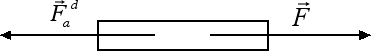
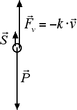
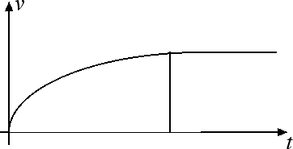

Applicazioni della dinamica
Attrito dinamico e attrito viscoso
Nelle ultime sezioni abbiamo visto come una forza F applicata a un corpo determina un'accelerazione a: ad esempio la forza di gravitazione universale determina l'accelerazione di gravità. Più in generale, forza ed accelerazione sono legate fra loro dal secondo principio della dinamica F = m · a. Tuttavia se spingiamo un armadio, applicandogli una forza costante, vediamo che il moto risultante non è uniformemente accelerato. La ragione di questo sta nella forza d'attrito dinamico: Fad = kd · m · g.

Se noi spingiamo l'armadio con una forza uguale ed opposta a quella della forza d'attrito, abbiamo che la forza totale applicata all'armadio è zero e, per il primo principio della dinamica, il moto è rettilineo uniforme. Il secondo principio della dinamica rimane valido se consideriamo tutte le forze applicate al corpo e ci conferma che, pur applicando una forza attiva all'armadio, vediamo che la velocità dell'armadio non aumenta. Se non tenessimo in considerazione le forze d'attrito concluderemmo anche noi, come Aristotele, che le forze servono per mantenere costante la velocità di un corpo.
Andiamo ora ad analizzare cosa succede se mettiamo una sfera in acqua o in fluido viscoso. Se sulla sfera agissero solo la forza-peso P e la spinta di Archimede S avremmo un moto uniformemente accelerato dovuto alla forza totale di intensità P - S. Quando la sfera è posta in un liquido reale si genera anche una forza d'attrito viscoso, proporzionale alla velocità v del corpo. Quindi all'inizio, quando la velocità della sfera è piccola, anche la forza d'attrito è trascurabile. Poi, man mano che il corpo scende, la sua velocità aumenta e di conseguenza aumenta anche la forza d'attrito viscoso. Ad un certo punto la velocità è tale per cui la forza d'attrito viscoso Fv uguaglia la forza P - S che agisce sul corpo, ossia Fv = P - S.

In questa situazione la forza totale che agisce sulla sfera è uguale a zero e il corpo si muove di moto rettilineo uniforme. Di conseguenza, in presenza di attrito viscoso, la velocità di un corpo aumenta fino ad arrivare ad una velocità limite, detta velocità di regime, che viene poi mantenuta dal corpo nel suo moto.

Anche l'aria può essere considerata come un fluido poco viscoso e pertanto c'è una forza d'attrito. Non solo, ma ci sono dei dispositivi, come il paracadute, che sfruttano l'attrito viscoso presente nell'aria per trasformare il moto uniformemente accelerato del paracadutista in un moto rettilineo uniforme, riducendo in questo modo i danni dell'atterraggio.